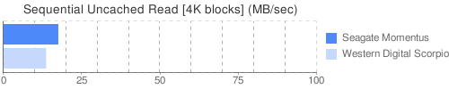
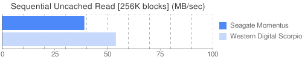

Published 22nd April 2008
I recently upgraded my MacBook's hard drive, the Seagate Momentus 5400.3 160GB (ST9160821AS), to a Western Digital Scorpio 250GB (WD2500BEVS) and did a quick benchmark to see how much performance would change over the old hard drive.
Listed below are the average scores of 6 XBench Memory Test runs.
Seagate Momentus: 41.47 MB/sec Western Digital Scorpio: 55.51 MB/sec
Seagate Momentus: 38.66 MB/sec Western Digital Scorpio: 51.31 MB/sec
Seagate Momentus: 17.46 MB/sec Western Digital Scorpio: 13.59 MB/sec
Seagate Momentus: 38.87 MB/sec Western Digital Scorpio: 53.82 MB/sec
Seagate Momentus: 0.72 MB/sec Western Digital Scorpio: 1.88 MB/sec
Seagate Momentus: 20.81 MB/sec Western Digital Scorpio: 33.89 MB/sec
Seagate Momentus: 0.47 MB/sec Western Digital Scorpio: 0.50 MB/sec
Seagate Momentus: 16.87 MB/sec Western Digital Scorpio: 20.65 MB/sec
The temperature stayed the same, at 32°C. There was no noticeable increase in loudness with the new hard drive.
In the first moment I noticed that the WD Scorpio is vibrating a little more than the Seagate Momentus (the hard drive location is directly under the left hand). However, it became pretty normal after half-an-hour.
There was only one test (sequential uncached read with 4K blocks) where the WD Scorpio was slightly slower than the Seagate Momentus, but all the other tests show a massive improvement.
There were quite a few people told me that upgrading the MacBook's default hard drive would definitely be worth it, but I never expected it to be so clear. All in all, I'm happy with the new hard drive.